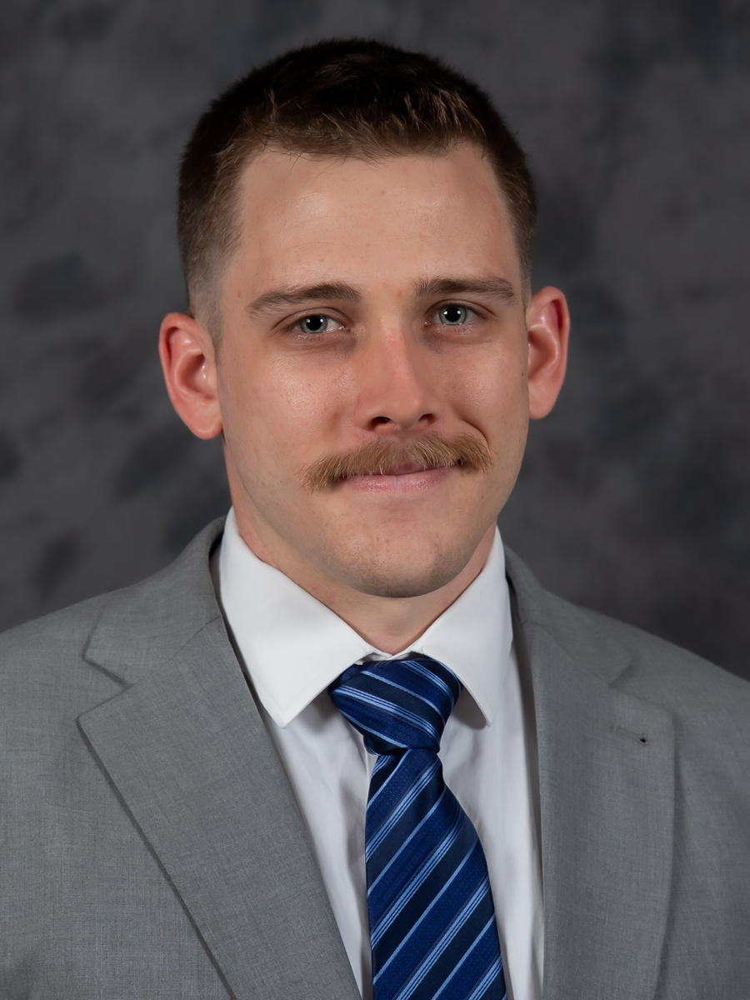

Quentin Sharier

Summary
My name is Quentin Sharier, and I am a highly motivated and skilled software engineer with a passion
for creating innovative solutions in the IT domain. I recently graduated with a B.S. in Computer Science
Engineering from Ohio State University, where I maintained a 3.62 Major GPA and consistently made it to
the Dean's List throughout my academic journey. My technical expertise spans various areas, including
algorithms, computer architecture, databases, artificial intelligence, web applications, and information
security. Proficient in various programming languages such as Java, C#, Python, and more. I can tackle
complex challenges and turn ideas into reality.
In addition to my academic accomplishments, I bring
valuable hands-on experience, having worked as a Black Hawk Mechanic in the Ohio Army National Guard,
I developed a disciplined and focused approach to tasks, performing under intense pressure while ensuring
the safety and functionality of a fleet of helicopters. As a former Care Provider, I honed my communication
and problem-solving skills while assisting handicapped individuals. Moreover, my tenure with Amazon as an
Amnesty team member involved maintaining and resolving issues related to the Kiva robotic system, further
strengthening my technical prowess.
Education
-
Ohio State University | Columbus, Ohio | May 2023
- B.S., Computer Science and Engineering
- Major GPA (4.0 Scale): 3.62, Dean’s List: Spring ’23, Fall ’22, Summer ’22, Spring ’22, Fall ’21
Qualifications
- Technical Coursework: Algorithms, computer architecture, operating systems, databases, computer networking, artificial intelligence, web applications, animation, information security.
- Operating Systems: Windows, Macintosh, Linux, Unix.
- Programming: Java, C, C++, C#, Python, HTML, SQL, JavaScript, CSS, Angular, Ruby, Haskell.
- Software: DataGrip, Unity, Word, PowerPoint, Excel, Fusion 360.
- Security Clearance: Secret-level clearance (July 2013 - present).
Projects
-
GPT-Based System to Aid in Research Paper Digestion (Academic) | January-May 2023
-
Developed a powerful GPT-3-driven research paper digestion tool and front-end interface. Enabled
seamless questioning of theories, experiments, and methodologies from a vast research paper collection. Integrated APIs like Google Drive and OpenAI for enhanced functionality.
-
Database Design Project (Academic) | January-May 2023
- Designed and implemented an information management system and SQL database for inventory and sales operations for a bookstore, including a professional final report with a relational database schema, entity relationship diagram, SQL queries, and a user manual.
-
Custom Remote Start System (Personal) | May-September 2022
- Engineered a custom remote start system for an automobile using Arduino, VAG-COM, and VCDS. Programmed in Arduino IDE, built circuitry, maintained technical documentation, and collaborated with other car enthusiasts to improve the system.
Work Experience
-
Care Provider | Ability Matters | Columbus, OH | January 2016-January 2023
- Assisted handicapped individuals with daily living activities and communication skills.
- Rated as a top 5 employee in the company in 2022.
-
Amnesty | Amazon | Columbus, OH | December 2016-December 2017
- Maintained, assessed, and resolved problems related to the Kiva robotic system.
-
WG10 Aircraft Mechanic | US DOD | Columbus, OH | February 2015-February 2016
- Examine, inspect, and maintain aircraft components, interpret maintenance manuals, and maintain
repair logs.
-
Technician, Heavy Equipment Operator | SOS | Newcomerstown, OH | October 2012-March 2015
- Operated and maintained heavy equipment and complied with HAZMAT procedures.
Miltary Experience
-
Black Hawk Mechanic | Ohio Army National Guard | Columbus, OH | May 2013-May 2020
- Responsible for maintenance on a fleet of 20+ Black Hawk helicopters to ensure safe functioning.
- Maintained military bearing.
- Performed tasks under intense pressure.
- Supervised and led as a Corporal.
Links